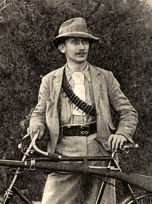
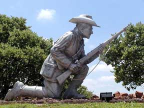

[Previous entry: "Downsizing"] [Main Index] [Next entry: "Heads up on TCF"]
08/23/2006 Archived Entry: "Obscure Freedom Fighters: Danie Theron"
FROM TIME TO TIME in my reading, I come across stories of impressive but little-known people who fought for freedom in little-known places in history. People whose courage and determination should not be forgotten.
William Wallace of 13th century Scotland is one example of such a person, largely unknown until a screenwriter also named Wallace noticed his monument in Stirling and inquired who the man was.

Another example is Boer soldier and scout Danie Theron.Theron was in civilian life a lawyer in the Orange Free State in the late 1890s. He is best known for being the driving force behind the Transvaal's formation of a military bicycle corps, used for scouting and relaying messages (the bicycle was actually a surprisingly efficient mode of transportation in that country). His most notable single action was in the Battle of Paardeberg, where a major Boer general (Cronje) and several thousand troops were surrounded by British forces. Theron, acting as messenger for the other primary Boer commander, sneaked through British lines to convey a plan for a breakout operation - and then sneaked through a the lines a second time to bring back Cronje's reply. The planned operation failed (despite Theron's efforts), and the surrender of Cronje's forces was a major setback to the Boers.
Within just a few weeks (in March of 1900), the Boer command authorized Theron to form his own small scouting force, and it is here that Theron really comes into his element. With 80 handpicked men (described by Boer General de Wet as a very colorful group), Theron wasted no time in launching a guerrilla campaign against the British who by that time occupied most of the Transvaal. He and his men attacked trails and rail yards, ambushed and captured British soldiers and officers, blew up bridges, and freeing captured Boer fighters from British prisons. He and his unit rarely went more than a week without hitting the British occupiers somewhere. Within less than a month, the British commander in chief in the Transvaal (Lord Roberts) declared Theron to be the "hardest thorn in the flesh of the British advance", and put a bounty of 1,000 pounds sterling on his head.
I should point out that the Boers were, as a group, expert riflemen, having all grown up hunting antelope in the savanna. They were also generally armed with the most advanced rifles of the day, Lee-Metford and Mauser bolt-actions. They were also basically a civilian militia, fighting because the British were invading their homeland.
But back to Theron. He and his fighters continued to wreak havoc with the British occupiers, and by July they had dispatched a unit of 4,000 soldiers to find and eliminate his scouts. After one skirmish with this force on July 19th, Theron manages to evade them and continue raiding.
Theron met his death shortly thereafter, on September 5th, 1900 - though his final actions only underscore his courage and determination. While out alone on a hill reconnoitering for a planned attack on a British column, he was discovered by a seven-man British patrol. He engaged them with his rifle, killing three and wounding the other four - without being hit himself. The shooting attracted the notice of the column, which immediately charged the hill. Theron was able to escape them, and continued firing at British soldiers. It was only when the column finally brought forward seven of their artillery pieces to bombard the hill that Theron was killed. His men recovered his body several days later, and it was sent to be buried alongside his late fiance at her home on the Klip River.
Upon hearing of Theron's death, Boer commanding general Christiaan de Wet mourned, "Men as lovable or as valiant there might be, but where shall I find a man who combined so many virtues and good qualities in one person? Not only had he the heart of a lion but he also possessed consummate tact and the greatest energy... Danie Theron answered the highest demands that could be made on a warrior."
Interestingly, in March of 2002, former South African President Nelson Mandela mentioned in a speech that his own development as an activist against apartheid had been significantly influenced by reading about Boer generals and soldiers, including Theron.

Resources:
http://africanhistory.about.com/library/weekly/aa031201a.htm
http://rapidttp.com/milhist/vol041dm.html
http://www.instinsky.de/Boer_War/Danie_Theron/danie_theron.html
Posted by Ian @ 10:20 PM CST
Link